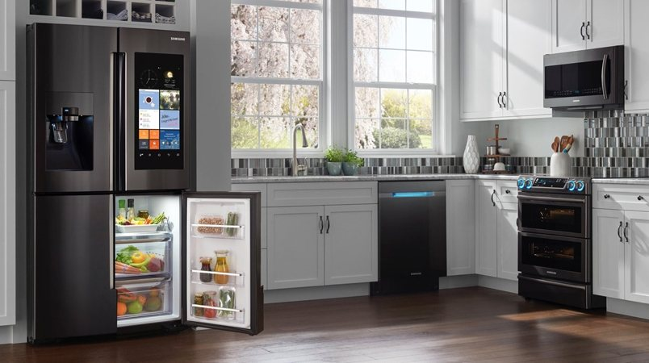

Nuestro servicio técnico Samsung en Cartagena protege su inversión: solo instalamos repuestos genuinos Samsung, importados de distribuidores autorizados, con garantía escrita sobre la pieza y la mano de obra. Nunca comprometemos la calidad de su equipo con piezas genéricas.

Trabajamos únicamente con compresores genuinos, incluida la tecnología Twin Cooling y Digital Inverter, importados de distribuidores autorizados.
Las tarjetas de control de neveras Samsung son sensibles a las fluctuaciones de voltaje; solo instalamos repuestos originales para no comprometer el resto del sistema.
Un empaque genérico no sella igual que el original Samsung y acelera nuevas fallas por humedad, muy relevante en el clima de Cartagena.
Para dispensadores de agua y hielo usamos motores y válvulas 100% originales Samsung, con garantía escrita sobre la pieza y la instalación.
«¿Por qué cobran más por un repuesto original si en el mercado hay uno genérico más barato?» Es una pregunta válida, y la respuesta está en la tolerancia de fabricación. Un compresor o una tarjeta electrónica genérica puede parecer idéntica a la original Samsung, pero rara vez está calibrada para la tecnología específica Twin Cooling y Digital Inverter de su equipo.
En la práctica, esto se traduce en tres riesgos concretos: primero, un rendimiento inferior desde el primer día (más consumo eléctrico, enfriamiento irregular); segundo, una vida útil mucho más corta —hemos visto piezas genéricas fallar en menos de un año—; y tercero, en algunos casos, daño a componentes vecinos que sí eran originales, multiplicando el costo final de la reparación.
Para confirmar que un repuesto es genuino Samsung, verifique que venga en empaque sellado de fábrica con número de parte impreso, que el proveedor pueda mostrar su relación con un distribuidor autorizado, y desconfíe de precios muy por debajo del promedio de mercado: es la señal más común de una pieza falsificada o reacondicionada sin garantía.
Nosotros solo instalamos repuestos originales Samsung, con la factura y la garantía escrita como respaldo. Si ya tiene un repuesto genérico instalado por otro técnico y sospecha que es la causa de una falla recurrente, podemos revisarlo y, si aplica, reemplazarlo por la pieza original correspondiente.
Un repuesto genérico puede costar menos al inicio, pero en el clima húmedo y salino de Cartagena suele fallar antes y dañar componentes vecinos. Los repuestos originales Samsung están diseñados y probados específicamente para la tecnología Twin Cooling y Digital Inverter de su equipo, lo que garantiza un funcionamiento correcto a largo plazo y mantiene vigente la garantía de fábrica cuando aplica.
Los repuestos genéricos no están fabricados para la tolerancia exacta de la tecnología Twin Cooling y Digital Inverter. Pueden funcionar unos meses, pero suelen causar una falla mayor y anulan cualquier garantía.
Sí, toda instalación de repuesto original incluye garantía escrita tanto sobre la pieza como sobre el trabajo del técnico.
Cuéntanos el modelo de su equipo. Confirmamos disponibilidad por WhatsApp.
☏ Escríbenos por WhatsApp